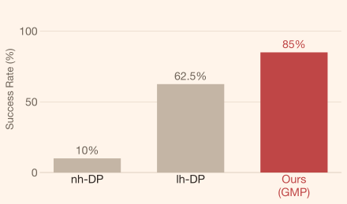

Model Architecture

Robot policies that blindly extend observation histories overfit and regress. GMP learns when and what to recall, achieving 30.1% higher success rates on non-Markovian manipulation while staying competitive on Markovian tasks.
Robotic manipulation tasks exhibit varying memory requirements, ranging from Markovian tasks that require no memory to non-Markovian tasks that depend on historical information spanning single or multiple interaction trials. Surprisingly, simply extending observation histories of a visuomotor policy often leads to a significant performance drop due to distribution shift and overfitting.
To address these issues, we propose Gated Memory Policy (GMP), a visuomotor policy that learns both when to recall memory and what to recall. To learn when to recall memory, GMP employs a learned memory gate mechanism that selectively activates history context only when necessary, improving robustness and reactivity. To learn what to recall efficiently, GMP introduces a lightweight cross-attention module that constructs effective latent memory representations. To further enhance robustness, GMP injects diffusion noise into historical actions, mitigating sensitivity to noisy or inaccurate histories during both training and inference.
On our proposed non-Markovian benchmark MemMimic, GMP achieves a 30.1% average success rate improvement over long-history baselines, while maintaining competitive performance on Markovian tasks in RoboMimic. All code and data will be publicly available.
In cross-trial tasks, a physical parameter (such as surface friction or object mass) is randomly sampled per episode and hidden from the policy. The robot is given multiple trials and must leverage outcomes from earlier attempts to adapt. GMP's memory gate selectively activates history context only when it is informative, enabling robust cross-trial adaptation without overfitting to irrelevant past observations.
In each episode, the friction coefficient of the cube is randomly sampled from 0.005 to 0.015 and is unknown during testing. The policy is given 6 trials to push the object to the target region (red box). An episode is considered successful if the cube stops within the target region in all of the last 3 trials.

The robot needs to cast the object with an unknown friction coefficient so that the object stops sliding between two green lines. The robot stops at the same position in each trial and adaptively adjusts its casting speed. In each episode, the robot is allowed 3 casting attempts. The episode is considered successful if the last 2 trials are successful.

The robot must fling the cloth so that its far edge lands in the target (black) area. In each episode, the cloth's mass is randomly sampled between 0.1 kg and 2.0 kg, and the robot is allowed five flings. Flinging too slowly prevents the cloth from fully extending, while flinging too fast causes it to fold back on itself—both resulting in failure. An episode is considered successful if the last 3 trials are all successful.

In-trial tasks require the robot to recall a cue observed earlier within a single episode (such as an object's starting position or a bin's color). The relevant context appears only once; the policy must encode and retain it to succeed at a later decision point. GMP's lightweight cross-attention module constructs effective latent memory on demand, gating out irrelevant history to stay focused.
A cup and a saucer are randomly placed on the table. The robot must first place the cup on the saucer and then return it to within 5 cm of its original position. This task tests the policy's spatial memory and robustness to real-world noise.


The robot picks up a cube from one of 4 bins with randomly assigned colors. Once the cube is picked up, the bin colors are shuffled, and the robot needs to put the cube back in the bin with the original color. This task tests the policy's visual memory.

A cube is randomly placed in one of four bins, and the robot picks it up, holds it in the air for 2 seconds before returning it to the original bin. This task tests the policy's spatial memory.


We visualize causal cross-attention weights to understand which past timesteps the policy attends to when computing the next action. The gated memory mechanism actively selects the most informative historical context, confirming that the policy learns structured, interpretable recall rather than attending uniformly across history.
[Description: Summarize which tasks showed the largest gains, and what this result implies about the generality of the gated memory approach.]